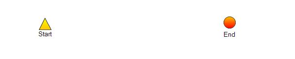
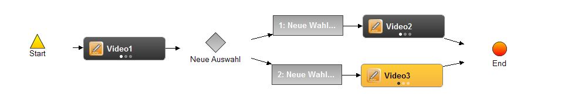
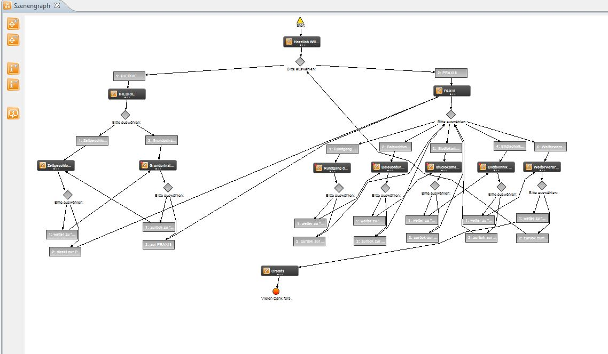

Scenegrapheditor
The szenengrapheditor helps you to create and to merge your project.
It is used to put the defined scenes in a graph and thus define the sequence in the interactive video.
There exist two types content-nodes: scene-nodes, which represent a scene in the video, and selection-nodes, which
offer the uster a range of options for following scenes. Furthermore there exist feature-nodes, as for example a starting and
an ending node.
Every graph has to include a starting and an ending node as well as at least one scene-node. Furthermore from every node there
has to lead a path to the end of the video (no impasses).
The scenegraph-editor can be opened by clicking onto "Scenengraph" in the taskbar.
Moreover you can open the scenegraph by making a rightclick into the scene-repository and select "Open Scenegraph".

Now the scenegraph opens:
In the following you will learn more about the usage of the tools and objects in the scenegraph of the SIVA Suite:
On the left side of the scenegraph you find 5 buttons:
 With the upper two ones you can zoom in and out into the
indicating range.
With the upper two ones you can zoom in and out into the
indicating range.
 With the third and the fourth
further information towards the videos in the scenegraph can be displayed with help of the semantic zoom. This could be for
instance a thumbnail and the number of the annotations created for the video.
With the third and the fourth
further information towards the videos in the scenegraph can be displayed with help of the semantic zoom. This could be for
instance a thumbnail and the number of the annotations created for the video.
If you activate
the last button, the semantic fisheye-zooming, you can see for example a thumbnail.
On the white area of the scenegraph you already a starting and an ending element. "Start" marks the video with what the
videotool should start. The video that will be shown last has to be linked to "End".

Create a scenegraph
Scenes that already have been defined are administered in a scene-repository where you can add single scenes to the scenegraph from.
The editor allows the author to put the scenes in the graph into different orders. The toolbar of the scenegraph-editor can be
positioned on the right or the left side of the graph (via drag and drop). Tools for deleting and adding nodes and edges are offered.
Between the scenes you can add links to various paths/alternatives. With their help the user can decide the order of the
interactive video.
Via drag and drop you add a video and link it with the help of the linking tool with the starting and ending element by
mouse clicking on both elements you want to link. Before that is possible, the video has to be converted into a scene by using
the sceneeditor as in the scenegrapheditor just single scenes
can be used.
Now you have created your first scenegraph!

The creation of a selection of videos works as follows: Drag all the video scenes you want to use into the scenegraph.
Keep in mind that a there has to be a video at the beginning of the scenegraph directly after "start".

Now you add a "user selection" and the according amount of "selection alternatives". Here you see how the structure
has to be linked: A video is followed by a selection, that is why this has to be linked via an arrow with "new selection".
As this is a selection alternative between two videos, two grey "selection alternative"-elements have to be linked with the
selection and the videos that should be played after clicking onto the selection alternative.

The name of the selection at the same time is the title that will appear in the exported project. The editor can be opened by
doubleclicking onto the selection. Here you can change the title, the order the selection alternatives should be shown in and decide
whether after a certain duration one of the selection alternatives should be played automatically.
The title of the selection alternatives can also be be changed by clicking onto it in the scenegraph.
The "conditional user selection" works the same manner as the usual "user selection". The only difference is that via
double click onto the selection alternatives in the "path editor" that will open, one or more scenes can be set as condition
to be able to use that selection alternative. If the required scene still has not be seen, the selection alternative will
remain invisible. You just have to select the hook and select the desired condition while keeping the STRG-key pressed. Moreover
you should write down the conditions for the user in the field below.
For a random selection you just have to link all the videos, from which one should be chosen from, with the selection.
There are no selection alternatives needed.

Another element is the "resume button". If you use it between two videos, one video is played after the other one after
having pressed the button.
Further information towards the
toolbar you find here.
A finished SIVA-project coul look like this. Here just the usual "user selection" has been used.

Annotations can be added to the scenes.
If the annotations have been added, there exists another view of the scenegraph that gives you a better overview.
Via right click onto one of the scenes a new window opens. Here you click onto "Semantic Zoom In" to receive a more
detailed view. Now you find an overview of the annotations that have been added to the scene directly below the scene.


If you choose "Semantic Zoom In" once more, all of the dots below the thumbnail will be coloured in black and you will see
the duration of the scene, what the source of the scene is and the single annotations will be listet with their names.

Finally you can check whether your graph is completely linked or if there are still some unlinked elements. You can do this by
clicking onto "Check graph" in the taskbar.
If everything is linked properly and the graph starts with a starting and an ending element, then a confirmation will appear
that informs you that your graph is valid and you project can be
exported.

If the graph is not completely linked, an error message appears. To receive further information you can click onto
"More Information"